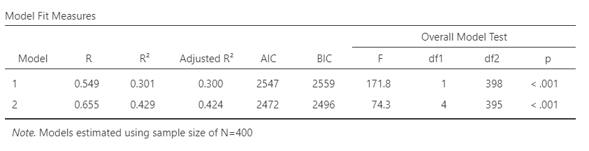
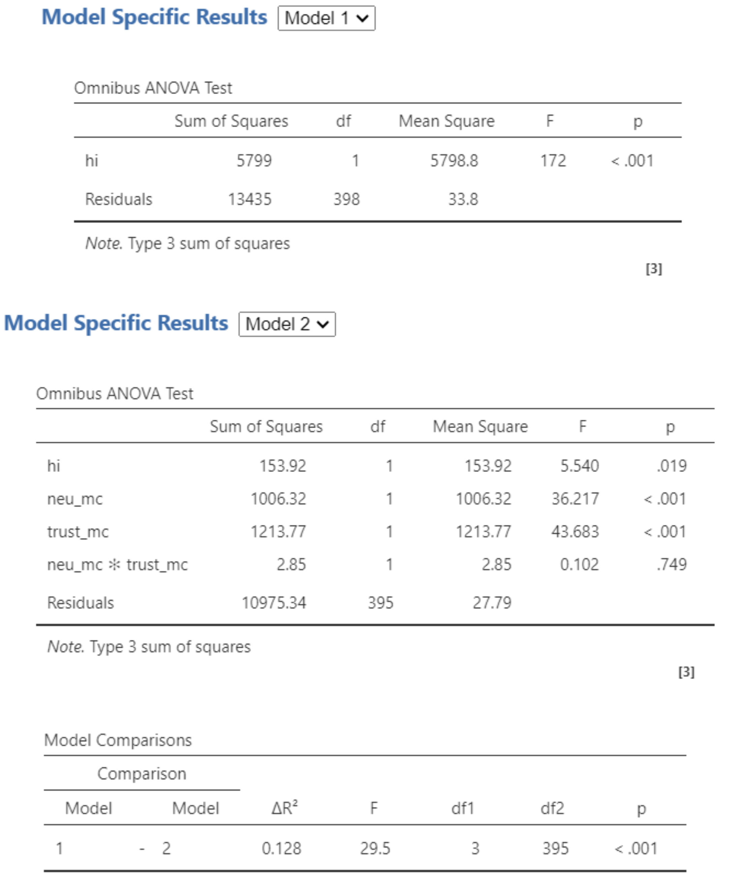
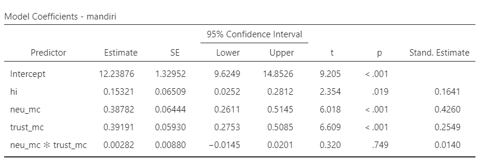
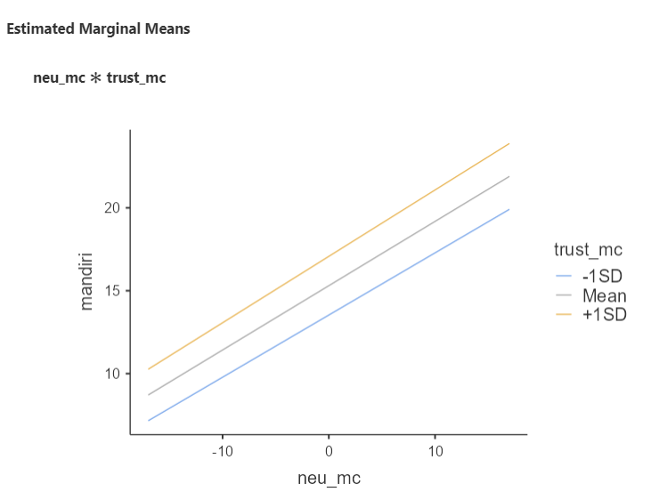
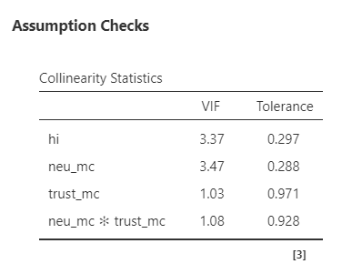

Analisis Moderasi
OLS Interaction Terms dan medmod di jamovi
2026-04-23
Outline
- Konsep moderasi: apa dan kapan relevan?
- Pendekatan 1: suku interaksi dalam regresi OLS
- Mean-centering prediktor
- Latihan:
dataset-sekolah.omv - Interpretasi simple slopes dan estimated marginal means
- Diagnostik kolinearitas
- Pelaporan hasil
- Pendekatan 2: modul
medmoddijamovi(berbasislavaan)- Perbedaan konseptual OLS vs.
medmod - Efek kondisional dan Johnson-Neyman (floodlight)
- Latihan:
dataset-sekolah.omvdenganmedmod - Pelaporan hasil
- Perbedaan konseptual OLS vs.
- Latihan mandiri
Apa itu Moderasi?
Moderasi: efek yang bergantung pada konteks
Moderasi terjadi ketika kekuatan atau arah hubungan antara X dan Y bergantung pada nilai variabel ketiga (M, moderator).
Persamaan umum:
\[Y = b_0 + b_1 X + b_2 M + b_3 (X \times M) + \varepsilon\]
- \(b_1\) = main effect X (pada M = rata-rata)
- \(b_2\) = main effect M (pada X = rata-rata)
- \(b_3\) = koefisien interaksi → uji moderasi
- Jika \(b_3\) signifikan → efek X terhadap Y berbeda tergantung nilai M
Diagram:
X ───────────────→ Y
↑
M (moderator)M bukan mediator (tidak berada di jalur X → M → Y). M mengubah kekuatan atau arah panah X → Y.
Kapan moderasi relevan?
“Tergantung…” dalam kalimat penjelasan — sinyal moderasi mungkin terjadi
- “Neuroticism ibu berpengaruh terhadap kemandirian anak, tapi tergantung seberapa besar ia mempercayai perkembangan natural anak.”
- “Efek beban kerja terhadap burnout berbeda tergantung tingkat dukungan sosial.”
Moderasi menjawab pertanyaan “untuk siapa?” atau “dalam kondisi apa?” suatu efek berlaku
Moderasi ≠ mediasi
- Mediasi menjawab: “melalui jalur apa?” — X → M → Y
- Moderasi menjawab: “seberapa kuat?” — M mengubah panah X → Y
- Keduanya sering dikacaukan, padahal secara konseptual sangat berbeda!
Pendekatan 1: OLS dengan Suku Interaksi
Regresi dengan suku interaksi (interaction terms)
Ada 2️⃣ hal yang diestimasi:
Main effect
- Efek langsung satu prediktor terhadap outcome, dengan prediktor lain di-hold constant pada rata-ratanya (setelah centering)
- Contoh: ketika main effect neuroticism (b) = 0.31, artinya efek neuroticism terhadap kemandirian ketika trust = rata-rata
Interaction effect
- Seberapa besar efek X1 terhadap outcome berubah setiap satu unit perubahan X2
- Jika signifikan → hubungan antara X1 dan outcome tidak konstan; berbeda-beda tergantung nilai X2
Mean-centering pada suku interaksi (interaction terms)
Ketika melakukan analisis regresi dengan suku interaksi, prediktor dan moderator perlu di-centering terlebih dahulu.
Alasannya, koefisien main effect akan lebih mudah diinterpretasi:
- Tanpa centering, koefisien X1 adalah efek X1 ketika X2 = 0 — sering tidak bermakna substantif
- Dengan centering, koefisien X1 adalah efek X1 ketika X2 berada di rata-ratanya
Selain itu, centering mengurangi multikolinearitas artifisial antara prediktor dan suku interaksi:
- Tanpa centering, variabel interaksi (X1 × X2) sangat berkorelasi dengan X1 dan X2 secara terpisah
- Centering mengurangi korelasi artifisial ini, bukan multikolinearitas substantif
Latihan 1️⃣ — OLS dengan suku interaksi
Kita lanjutkan kasus Marimar. Hipotesis barunya:
“Efek neuroticism ibu terhadap kemandirian anak dimoderasi oleh kepercayaan ibu pada perkembangan natural anak (trust in organismic development).”
Gunakan dataset-sekolah.omv
Langkah-langkah di jamovi — Regression → Linear Regression:
- Pada model builder, klik add new block
- Block 1: masukkan hi
- Block 2: sambil menekan
ctrl, klik neu_mc lalu trust_mc → klik tanda panah kedua → interaction; masukkan juga neu_mc dan trust_mc sebagai main effects
- Centang collinearity statistics di assumption checks
- Centang AIC dan BIC di model fit
- Masukkan neu_mc dan trust_mc di estimated marginal means → terms 1
Model fit

Model 2 (F(2,397) = 74.3, p = .001, Adj. R2 = .424) dapat menjelaskan varians tingkat kemandirian anak lebih baik daripada Model 1 (F(1,398) = 171.8, p = .001, R2 = .300), dengan overlapping variances sebesar 42.4% dibanding 30%.
Information criteria (AIC & BIC)
- Memberikan “penalti” pada model yang mengandung lebih banyak prediktor — mengatasi kelemahan R2 yang terus naik seiring ditambahnya prediktor
- Pilih model dengan AIC dan BIC terkecil (Model 2)
Model comparison
Ketika dibandingkan, Model 1 dan Model 2 berbeda signifikan (F(1,397) = 83.7, p = .001). ΔR2 = .122, artinya penambahan suku interaksi meningkatkan kemampuan model menjelaskan varians sebesar 12.2%.
Coba perhatikan Residuals Model 1 dengan Model 2

Koefisien model 2

Pendapatan keluarga dapat menjelaskan variasi kemandirian anak (B = 0.153 95% CI [0.025, 0.281], SE = 0.065, t = 2.354, p = .019).
Main effect neuroticism (B = 0.387 95% CI [0.261, 0.514], SE = 0.064, t = 6.018, p = .001) dan trust in organismic development (B = 0.391 95% CI [0.275, 0.508], SE = 0.059, t = 6.609, p = .001) secara independen menjelaskan tingkat kemandirian anak.
Tidak ada bukti bahwa ada interaksi antara neuroticism dengan trust in organismic development dalam menjelaskan varians kemandirian anak (B = -0.005 95% CI [-0.019, 0.018], SE = 0.009, t = -0.05, p = .955).
Estimated Marginal Means
- Interpretasi slopes pada suku interaksi — bisa di-probe dengan estimated marginal means
- Dalam kasus ini, suku interaksi nonsignifikan: dua garis regresi sejajar, tidak berpotongan
- Artinya, masing-masing prediktor berkontribusi menjelaskan varians outcome secara independen

Estimated Marginal Means
Seandainya suku interaksi signifikan, lihat tanda slope-nya:
- B interaksi positif → pada ibu dengan trust tinggi (+1SD), hubungan neuroticism–kemandirian semakin menguat
- B interaksi negatif → pada ibu dengan trust tinggi (+1SD), hubungan neuroticism–kemandirian semakin melemah
Visualisasi interaksi
Garis regresi yang berpotongan (crossed) menunjukkan interaksi ordinal (arah efek berbalik). Garis yang menyebar tanpa berpotongan (divergent) menunjukkan interaksi disordinal (kekuatan berbeda, arah sama).
Diagnostik kolinearitas
- Dapat dideteksi dengan variance inflated factors (VIF)
- VIF < 5 → multikolinearitas tidak terjadi
- Penelitian longitudinal punya potensi autokorelasi (residual time 1 dan time 2 berkorelasi)
- Dicek dengan tes Durbin-Watson
- p > .05 → autokorelasi tidak terjadi
- Untuk data cross-sectional, autokorelasi umumnya tidak relevan

Melaporkan hasil OLS dengan suku interaksi 1️⃣
Untuk menginvestigasi keterkaitan antara pendapatan keluarga, kecenderungan neuroticism ibu, dan kepercayaan ibu bahwa perkembangan anak dapat terjadi secara natural dengan tingkat kemandirian anak, peneliti melakukan analisis regresi linear hirarkial dengan interaction terms. Peneliti menyusun dua model: model 1 mengestimasi varians tingkat kemandirian anak dengan pendapatan keluarga inti sebagai prediktor, sedangkan pada model 2 peneliti menambahkan interaction terms antara neuroticism dengan trust.
Ketika dibandingkan, Model 1 dan Model 2 berbeda signifikan (F(1,397) = 29.5, p = .001). Model 2 (F(2,397) = 74.3, p = .001, Adj. R2 = .429, AIC = 2472, BIC = 2496) menjelaskan varians tingkat kemandirian anak lebih baik daripada Model 1 (F(1,398) = 171.8, p = .001, Adj. R2 = .300, AIC = 2547, BIC = 2559), dengan ΔR2 = .128.
Melaporkan hasil OLS dengan suku interaksi 2️⃣
Pendapatan keluarga dapat menjelaskan variasi kemandirian anak (B = 0.153 95% CI [0.025, 0.281], SE = 0.065, t = 2.354, p = .019). Main effect neuroticism (B = 0.387 95% CI [0.261, 0.514], SE = 0.064, t = 6.018, p = .001) dan trust in organismic development (B = 0.391 95% CI [0.275, 0.508], SE = 0.059, t = 6.609, p = .001) secara independen menjelaskan tingkat kemandirian anak. Tidak ada bukti bahwa interaksi antara neuroticism dengan trust in organismic development dapat menjelaskan varians kemandirian anak (B = -0.005 95% CI [-0.019, 0.018], SE = 0.009, t = -0.05, p = .955).
Potensi multikolinearitas dideteksi dengan VIF dan hasil analisis menunjukkan multikolinearitas kemungkinan tidak terjadi (VIF = 1.03–3.47).
Pendekatan 2: Analisis Moderasi dengan medmod
Apa itu medmod?
medmod adalah modul jamovi yang dirancang untuk:
- Analisis moderasi (moderation, MOD)
- Analisis mediasi (mediation, MED)
- Analisis moderasi-mediasi (moderated mediation) — setara dengan Hayes PROCESS Macro
Di balik layar: lavaan
medmod menggunakan paket R lavaan (latent variable analysis) — framework SEM yang digunakan luas dalam penelitian psikologi. Ini berarti estimasinya menggunakan Maximum Likelihood (ML), bukan Ordinary Least Squares.
- Dikembangkan oleh Marcello Gallucci (Università degli Studi di Milano-Bicocca)
- Dapat diinstal langsung dari
jamovi→ klik ikon ⊕ (pojok kanan atas) → cari medmod → Install
OLS interaction terms vs. medmod: apa bedanya?
| Aspek | OLS + Interaction Terms | medmod (berbasis lavaan) |
|---|---|---|
| Metode estimasi | Least squares | Maximum likelihood |
| CI untuk interaksi | Berbasis distribusi-t (asimtotik) | Bootstrap (non-parametrik) |
| Centering | Harus manual | Opsi otomatis |
| Efek kondisional | EMM — konfigurasi manual | Otomatis (−1SD, rerata, +1SD) |
| Johnson-Neyman | ✗ Tidak tersedia | ✓ Tersedia (floodlight) |
| Visualisasi | Estimated marginal means | Simple slopes plot otomatis |
| Framework model | Satu persamaan regresi | Path model (SEM) |
| Ekstensi ke mediasi | ✗ Tidak langsung | ✓ Moderated mediation (MEDMOD) |
Perbedaan inferensi: distribusi-t vs. bootstrap
OLS — distribusi-t (asimtotik)
- Berasumsi distribusi normal untuk standard errors
- Akurat ketika asumsi terpenuhi dan N besar
- Rentan terhadap pelanggaran normalitas residual
- Kurang akurat untuk koefisien interaksi yang distribusinya skewed
medmod — Bootstrap CI
- Tidak berasumsi distribusi tertentu untuk SE
- Mengambil ulang sampel ribuan kali (default: 1.000×)
- Lebih akurat untuk efek interaksi
- Direkomendasikan Hayes (2013) dan Preacher & Hayes (2008)
Mengapa bootstrap CI lebih baik untuk interaksi?
Koefisien interaksi merupakan hasil kali dua estimasi. Distribusi hasil kali dua koefisien cenderung non-normal, sehingga CI berbasis distribusi-t bisa tidak akurat — khususnya pada sampel kecil atau data yang tidak normal.
Kapan memilih OLS, kapan medmod?
✅ Pilih OLS + interaction terms jika:
- Hanya menguji satu moderasi sederhana
- Ingin membandingkan model hirarkial (ΔR², AIC/BIC)
- Distribusi residual memenuhi asumsi OLS
- Interpretasi B dan F-test sudah cukup
✅ Pilih medmod jika:
- Butuh bootstrap CI yang lebih robust
- Ingin visualisasi simple slopes otomatis
- Butuh analisis Johnson-Neyman (floodlight)
- Rencana memperluas ke mediasi atau MEDMOD
- Distribusi tidak normal atau sampel relatif kecil
Hindari analisis ganda tanpa justifikasi
Jangan menjalankan OLS dan medmod lalu melaporkan yang hasilnya “lebih signifikan”. Pilih pendekatan sebelum melihat data, berdasarkan pertanyaan penelitian dan karakteristik data.
Latihan 2️⃣ — Moderasi dengan medmod
Gunakan dataset yang sama: dataset-sekolah.omv
Pertanyaan penelitian: Apakah trust in organismic development memoderasi hubungan antara neuroticism ibu dan kemandirian anak?
Langkah-langkah di jamovi — medmod → MOD:
- Masukkan mandiri ke Dependent Variable (Y)
- Masukkan neu ke Independent Variable (X)
- Masukkan trust ke Moderator (M)
- Di bagian Covariates, tambahkan hi
- Di Inferential options: centang Bootstrap CI, gunakan default 1.000 resample
- Di Plots: centang Simple slopes plot
- Di Johnson-Neyman: centang untuk mengaktifkan floodlight analysis
Output medmod: Model Fit dan koefisien interaksi
medmod melaporkan:
- R² — proporsi varians yang dijelaskan
- F-test — uji signifikansi model keseluruhan
- Koefisien interaksi (X × M) — inilah uji moderasi
Interpretasi koefisien interaksi
- Signifikan → moderasi terbukti; efek X terhadap Y berubah tergantung nilai M
- Tidak signifikan → tidak ada bukti moderasi; efek X terhadap Y konstan di semua nilai M
Perbandingan output OLS vs. medmod:
| Output | OLS | medmod |
|---|---|---|
| R², F-test | ✓ | ✓ |
| B, SE, p | ✓ | ✓ |
| Bootstrap CI | ✗ | ✓ |
| Conditional effects | Partial | ✓ Full |
| JN plot | ✗ | ✓ |
Output medmod: Conditional Effects
Conditional effects menunjukkan efek X terhadap Y pada tiga nilai moderator (M):
| Nilai Moderator (trust) | B | SE | t | p | 95% Bootstrap CI |
|---|---|---|---|---|---|
| −1SD (percaya rendah) | — | — | — | — | [—, —] |
| Rata-rata | — | — | — | — | [—, —] |
| +1SD (percaya tinggi) | — | — | — | — | [—, —] |
Cara membaca conditional effects
- Efek X signifikan hanya pada satu atau dua level moderator → moderasi kondisional
- Efek X signifikan di semua level → efek konsisten, moderasi lemah atau tidak bermakna
- Perhatikan arah dan besaran B, bukan hanya signifikansinya — moderasi bisa bermakna substantif meski CI memotong nol
Output medmod: Johnson-Neyman (Floodlight Analysis)
Pertanyaan: Pada nilai moderator berapa efek X terhadap Y berubah dari tidak signifikan menjadi signifikan (atau sebaliknya)?
- Disebut juga floodlight analysis (Spiller et al., 2013)
- Menghindari batasan arbitrer “+1SD / −1SD” dari simple slopes — menunjukkan seluruh rentang nilai moderator
- Titik transisi disebut “regions of significance” — nilai M di mana efek X melewati batas signifikansi
medmodmenghasilkan Johnson-Neyman plot secara otomatis
Contoh interpretasi Johnson-Neyman
“Efek neuroticism terhadap kemandirian anak signifikan ketika skor trust berada di bawah X.XX (yaitu 42% sampel). Di atas nilai tersebut, efek neuroticism tidak berbeda signifikan dari nol.”
Melaporkan hasil analisis moderasi dengan medmod
“Analisis moderasi dilakukan menggunakan modul
medmoddijamovi(Gallucci, 2019) dengan estimasi bootstrap (1.000 resample, percentile CI). Variabel neuroticism ibu (X) dan trust in organismic development (M) dimasukkan sebagai prediktor kemandirian anak (Y), dengan pendapatan keluarga sebagai kovariat.Model secara keseluruhan signifikan (_R_² = ._, F(df) = _, p < .001). Koefisien interaksi antara neuroticism dan trust [tidak signifikan / signifikan] (B = _, 95% bootstrap CI [_, _], p = _).
Melaporkan hasil analisis moderasi dengan medmod
Jika interaksi signifikan, tambahkan:
“Efek kondisional neuroticism terhadap kemandirian signifikan pada nilai trust yang rendah (−1SD: B = _, 95% CI [_, _], p < .05), namun tidak signifikan pada nilai rata-rata dan tinggi (+1SD), mengindikasikan bahwa efek neuroticism melemah seiring meningkatnya kepercayaan ibu pada perkembangan natural anak. Analisis Johnson-Neyman menunjukkan bahwa efek neuroticism signifikan ketika skor trust < _.__ (_% sampel).”
Elemen wajib dalam pelaporan medmod
Selalu sebutkan: (1) metode estimasi (bootstrap), (2) jumlah resample, (3) jenis CI (percentile atau BCa), (4) tiga level moderator yang digunakan.
Latihan Mandiri
Latihan mandiri
Fernando Jose sebal sekali karena ia kembali kehilangan pengokotnya dan ini kali ketiga ia kehilangan pengokot yang baru dibelinya seminggu yang lalu.
Teman-teman kerjanya memang punya kebiasaan buruk meminjam barang tanpa seijinnya. Ia akhirnya bertanya, apa ya yang menyebabkan teman-temannya berperilaku seperti itu?
Akhirnya ia menduga, mungkin ada kaitannya dengan faktor kepribadian (conscientiousness) dan faktor situasional di tempat kerjanya.
Untuk faktor situasi, ia mengamati sepertinya persepsi atas kondisi kerja yang informal dan relasi formal antara senior-junior mungkin juga berkaitan dengan timbulnya perilaku tersebut.

Eksplorasi dataset
Dataset: dataset-organisasi.omv
- Fernando Jose akhirnya melakukan penelitian survei pada 450 karyawan di 3 perusahaan yang berbeda
- Dalam dataset tersebut ada beberapa variabel:
- con = Kecenderungan conscientiousness karyawan. Makin tinggi, karyawan lebih mungkin menunjukkan kehati-hatian, keteraturan, efisiensi, dan tanggung jawab.
- inf = Persepsi atas nuansa informal dalam kantor. Makin tinggi, karyawan makin merasa situasi kantor lebih informal.
- pow = Jarak kuasa (power distance). Makin tinggi, budaya senioritas makin kuat.
- incivil = Intensitas perilaku tidak beradab. Makin besar, karyawan lebih mungkin berperilaku emotionally abusive, mengambil barang tanpa ijin, dan berperilaku tidak pantas.
Tugas latihan mandiri
Susun hipotesis dan jalankan dua pendekatan analisis moderasi:
Pendekatan A — OLS dengan suku interaksi:
- Model 1: prediktor = jarak kuasa (pow)
- Model 2: tambahkan interaksi con × inf (beserta main effects-nya)
- Hitung ΔR², bandingkan AIC/BIC kedua model
Pendekatan B — medmod:
- X = con, M = inf, Y = incivil, kovariat = pow
- Aktifkan bootstrap CI, simple slopes plot, dan Johnson-Neyman plot
Pertanyaan diskusi:
- Apakah hasil OLS dan
medmodkonsisten? Mengapa bisa berbeda? - Informasi apa yang diberikan Johnson-Neyman yang tidak ada di OLS?
- Mana yang lebih sesuai untuk dilaporkan dalam artikel ilmiah? Mengapa?
Ada pertanyaan❓

Note
- Paparan disusun dengan menggunakan dan Quarto dengan template dari UNAIR Theme.
- Kontak saya via amelia.zein@psikologi.unair.ac.id